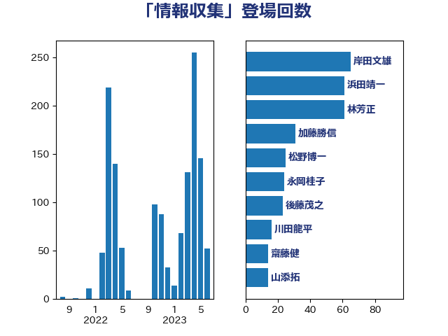

単語「情報収集」

| 岸田文雄 | 自由民主党 | 65 回 |
| 浜田靖一 | 自由民主党 | 61 回 |
| 林芳正 | 自由民主党 | 61 回 |
| 加藤勝信 | 自由民主党 | 31 回 |
| 松野博一 | 自由民主党 | 25 回 |
| 永岡桂子 | 自由民主党 | 24 回 |
| 後藤茂之 | 自由民主党 | 23 回 |
| 川田龍平 | 立憲民主党 | 16 回 |
| 齋藤健 | 自由民主党 | 14 回 |
| 山添拓 | 日本共産党 | 14 回 |
| 柴田巧 | 日本維新の会 | 13 回 |
| 鈴木俊一 | 自由民主党 | 11 回 |
| 谷公一 | 自由民主党 | 11 回 |
| 小林鷹之 | 自由民主党 | 10 回 |
| 金子道仁 | 日本維新の会 | 9 回 |
| 浅川義治 | 日本維新の会 | 9 回 |
| 長妻昭 | 立憲民主党 | 8 回 |
| 渡辺周 | 立憲民主党 | 8 回 |
| 川崎ひでと | 自由民主党 | 8 回 |
| 井上哲士 | 日本共産党 | 8 回 |
| 音喜多駿 | 日本維新の会 | 7 回 |
| 葉梨康弘 | 自由民主党 | 7 回 |
| 伊藤俊輔 | 立憲民主党 | 7 回 |
| 石井苗子 | 日本維新の会 | 6 回 |
| 玄葉光一郎 | 立憲民主党 | 6 回 |
| 梅谷守 | 立憲民主党 | 6 回 |
| 早稲田ゆき | 立憲民主党 | 6 回 |
| 小沼巧 | 立憲民主党 | 6 回 |
| 鈴木敦 | 国民民主党 | 5 回 |
| 簗和生 | 自由民主党 | 5 回 |
| 神谷宗幣 | 参政党 | 5 回 |
| 田村智子 | 日本共産党 | 5 回 |
| 田島麻衣子 | 立憲民主党 | 5 回 |
| 沢田良 | 日本維新の会 | 5 回 |
| 川合孝典 | 国民民主党 | 5 回 |
| 小西洋之 | 立憲民主党 | 5 回 |
| 大塚耕平 | 国民民主党 | 5 回 |
| 加田裕之 | 自由民主党 | 5 回 |
| 井坂信彦 | 立憲民主党 | 5 回 |
| 三浦信祐 | 公明党 | 5 回 |
| 鬼木誠 | 立憲民主党 | 4 回 |
| 高木真理 | 立憲民主党 | 4 回 |
| 高木かおり | 日本維新の会 | 4 回 |
| 高市早苗 | 自由民主党 | 4 回 |
| 青柳仁士 | 日本維新の会 | 4 回 |
| 門山宏哲 | 自由民主党 | 4 回 |
| 鈴木義弘 | 国民民主党 | 4 回 |
| 金子恭之 | 自由民主党 | 4 回 |
| 野田聖子 | 自由民主党 | 4 回 |
| 萩生田光一 | 自由民主党 | 4 回 |
| 磯崎仁彦 | 自由民主党 | 4 回 |
| 石原正敬 | 自由民主党 | 4 回 |
| 田嶋要 | 立憲民主党 | 4 回 |
| 田名部匡代 | 立憲民主党 | 4 回 |
| 浅野哲 | 国民民主党 | 4 回 |
| 河野太郎 | 自由民主党 | 4 回 |
| 東徹 | 日本維新の会 | 4 回 |
| 杉田水脈 | 自由民主党 | 4 回 |
| 岬麻紀 | 日本維新の会 | 4 回 |
| 山口壯 | 自由民主党 | 4 回 |
| 太栄志 | 立憲民主党 | 4 回 |
| 古川禎久 | 自由民主党 | 4 回 |
| 井野俊郎 | 自由民主党 | 4 回 |
| 阿部知子 | 立憲民主党 | 3 回 |
| 阿部司 | 日本維新の会 | 3 回 |
| 鈴木庸介 | 立憲民主党 | 3 回 |
| 金子恵美 | 立憲民主党 | 3 回 |
| 野間健 | 立憲民主党 | 3 回 |
| 美延映夫 | 日本維新の会 | 3 回 |
| 福山哲郎 | 立憲民主党 | 3 回 |
| 神谷裕 | 立憲民主党 | 3 回 |
| 石川大我 | 立憲民主党 | 3 回 |
| 池下卓 | 日本維新の会 | 3 回 |
| 水野素子 | 立憲民主党 | 3 回 |
| 松沢成文 | 日本維新の会 | 3 回 |
| 松本尚 | 自由民主党 | 3 回 |
| 松本剛明 | 自由民主党 | 3 回 |
| 杉尾秀哉 | 立憲民主党 | 3 回 |
| 末松義規 | 立憲民主党 | 3 回 |
| 早坂敦 | 日本維新の会 | 3 回 |
| 小池晃 | 日本共産党 | 3 回 |
| 小倉將信 | 自由民主党 | 3 回 |
| 宮本徹 | 日本共産党 | 3 回 |
| 国定勇人 | 自由民主党 | 3 回 |
| 吉田統彦 | 立憲民主党 | 3 回 |
| 吉田とも代 | 日本維新の会 | 3 回 |
| 倉林明子 | 日本共産党 | 3 回 |
| 佐藤英道 | 公明党 | 3 回 |
| 一谷勇一郎 | 日本維新の会 | 3 回 |
| 青山大人 | 立憲民主党 | 2 回 |
| 鈴木貴子 | 自由民主党 | 2 回 |
| 野村哲郎 | 自由民主党 | 2 回 |
| 輿水恵一 | 公明党 | 2 回 |
| 赤池誠章 | 自由民主党 | 2 回 |
| 赤嶺政賢 | 日本共産党 | 2 回 |
| 西銘恒三郎 | 自由民主党 | 2 回 |
| 西村智奈美 | 立憲民主党 | 2 回 |
| 西村明宏 | 自由民主党 | 2 回 |
| 西村康稔 | 自由民主党 | 2 回 |
| 自見はなこ | 自由民主党 | 2 回 |
| 福島伸享 | 無所属 | 2 回 |
| 石橋林太郎 | 自由民主党 | 2 回 |
| 石井正弘 | 自由民主党 | 2 回 |
| 田村まみ | 国民民主党 | 2 回 |
| 田中健 | 国民民主党 | 2 回 |
| 森山浩行 | 立憲民主党 | 2 回 |
| 松野明美 | 日本維新の会 | 2 回 |
| 本村伸子 | 日本共産党 | 2 回 |
| 木村次郎 | 自由民主党 | 2 回 |
| 木原誠二 | 自由民主党 | 2 回 |
| 斉藤鉄夫 | 公明党 | 2 回 |
| 徳永久志 | 無所属 | 2 回 |
| 岩谷良平 | 日本維新の会 | 2 回 |
| 山崎誠 | 立憲民主党 | 2 回 |
| 小宮山泰子 | 立憲民主党 | 2 回 |
| 堀井巌 | 自由民主党 | 2 回 |
| 城井崇 | 立憲民主党 | 2 回 |
| 和田有一朗 | 日本維新の会 | 2 回 |
| 吉田宣弘 | 公明党 | 2 回 |
| 吉田久美子 | 公明党 | 2 回 |
| 吉川赳 | 無所属 | 2 回 |
| 加藤明良 | 自由民主党 | 2 回 |
| 前原誠司 | 国民民主党 | 2 回 |
| 伊東信久 | 日本維新の会 | 2 回 |
| 伊佐進一 | 公明党 | 2 回 |
| 丸川珠代 | 自由民主党 | 2 回 |
| 中曽根康隆 | 自由民主党 | 2 回 |
| 中山展宏 | 自由民主党 | 2 回 |
| 三木圭恵 | 日本維新の会 | 2 回 |
| 鳩山二郎 | 自由民主党 | 1 回 |
| 高階恵美子 | 自由民主党 | 1 回 |
| 高良鉄美 | 無所属 | 1 回 |
| 高橋光男 | 公明党 | 1 回 |
| 馬場伸幸 | 日本維新の会 | 1 回 |
| 須藤元気 | 無所属 | 1 回 |
| 青木愛 | 立憲民主党 | 1 回 |
| 長友慎治 | 国民民主党 | 1 回 |
| 鎌田さゆり | 立憲民主党 | 1 回 |
| 野中厚 | 自由民主党 | 1 回 |
| 酒井庸行 | 自由民主党 | 1 回 |
| 道下大樹 | 立憲民主党 | 1 回 |
| 足立康史 | 日本維新の会 | 1 回 |
| 越智俊之 | 自由民主党 | 1 回 |
| 赤木正幸 | 日本維新の会 | 1 回 |
| 角田秀穂 | 公明党 | 1 回 |
| 藤井一博 | 自由民主党 | 1 回 |
| 蓮舫 | 立憲民主党 | 1 回 |
| 若松謙維 | 公明党 | 1 回 |
| 緒方林太郎 | 無所属 | 1 回 |
| 紙智子 | 日本共産党 | 1 回 |
| 福岡資麿 | 自由民主党 | 1 回 |
| 神津たけし | 立憲民主党 | 1 回 |
| 礒崎哲史 | 国民民主党 | 1 回 |
| 石川博崇 | 公明党 | 1 回 |
| 石井準一 | 自由民主党 | 1 回 |
| 石井浩郎 | 自由民主党 | 1 回 |
| 田野瀬太道 | 無所属 | 1 回 |
| 田畑裕明 | 自由民主党 | 1 回 |
| 田所嘉徳 | 自由民主党 | 1 回 |
| 牧山ひろえ | 立憲民主党 | 1 回 |
| 片山大介 | 日本維新の会 | 1 回 |
| 渡辺創 | 立憲民主党 | 1 回 |
| 浜田聡 | NHK党 | 1 回 |
| 河西宏一 | 公明党 | 1 回 |
| 池畑浩太朗 | 日本維新の会 | 1 回 |
| 武部新 | 自由民主党 | 1 回 |
| 榛葉賀津也 | 国民民主党 | 1 回 |
| 森本真治 | 立憲民主党 | 1 回 |
| 柚木道義 | 立憲民主党 | 1 回 |
| 杉本和巳 | 日本維新の会 | 1 回 |
| 本田顕子 | 自由民主党 | 1 回 |
| 本庄知史 | 立憲民主党 | 1 回 |
| 新妻秀規 | 公明党 | 1 回 |
| 新垣邦男 | 立憲民主党 | 1 回 |
| 斎藤アレックス | 国民民主党 | 1 回 |
| 打越さく良 | 立憲民主党 | 1 回 |
| 平木大作 | 公明党 | 1 回 |
| 市村浩一郎 | 日本維新の会 | 1 回 |
| 岩本剛人 | 自由民主党 | 1 回 |
| 岡本あき子 | 立憲民主党 | 1 回 |
| 山田勝彦 | 立憲民主党 | 1 回 |
| 山本太郎 | れいわ新選組 | 1 回 |
| 山岡達丸 | 立憲民主党 | 1 回 |
| 山井和則 | 立憲民主党 | 1 回 |
| 山下芳生 | 日本共産党 | 1 回 |
| 尾身朝子 | 自由民主党 | 1 回 |
| 小野田紀美 | 自由民主党 | 1 回 |
| 小野泰輔 | 日本維新の会 | 1 回 |
| 塩村あやか | 立憲民主党 | 1 回 |
| 塩川鉄也 | 日本共産党 | 1 回 |
| 堤かなめ | 立憲民主党 | 1 回 |
| 堂込麻紀子 | 無所属 | 1 回 |
| 國場幸之助 | 自由民主党 | 1 回 |
| 和田政宗 | 自由民主党 | 1 回 |
| 吉良よし子 | 日本共産党 | 1 回 |
| 古賀之士 | 立憲民主党 | 1 回 |
| 加藤竜祥 | 自由民主党 | 1 回 |
| 佐藤啓 | 自由民主党 | 1 回 |
| 住吉寛紀 | 日本維新の会 | 1 回 |
| 仁木博文 | 無所属 | 1 回 |
| 中村裕之 | 自由民主党 | 1 回 |
| 中川郁子 | 自由民主党 | 1 回 |
| 中島克仁 | 立憲民主党 | 1 回 |
| 上野通子 | 自由民主党 | 1 回 |
| 上杉謙太郎 | 自由民主党 | 1 回 |
| たがや亮 | れいわ新選組 | 1 回 |